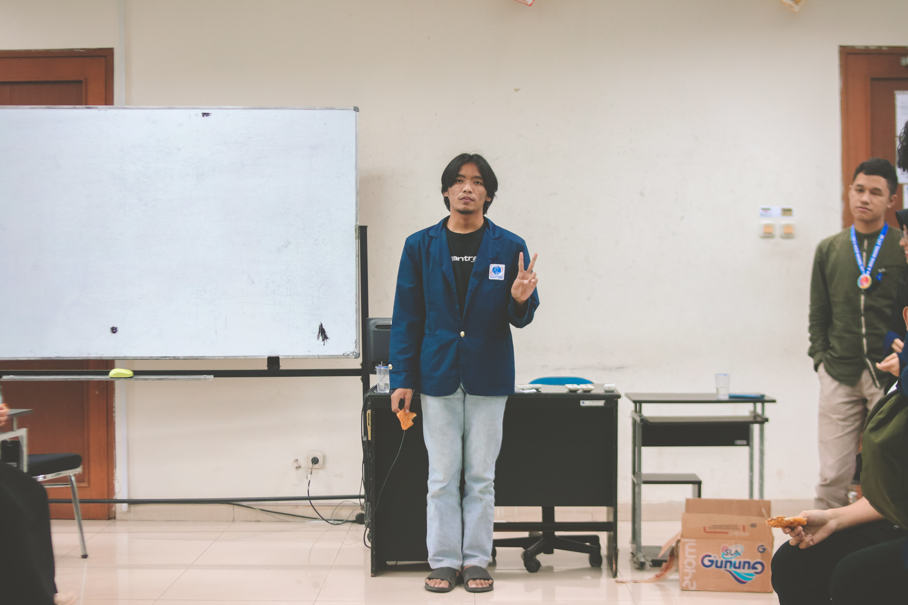

Salam Cinta, Satu Hati.
Dengan ucapan syukur, kita panjatkan kepada Allah yang Maha Pengasih dan Penyayang
karena berkat dan rahmatnya saya dapat membuat Website pertama saya. Saya berharap
di website ini, segala program yang akan dilaksanakan dapat berjalan dengan baik.
Kepada mentorku tercinta, selamat datang.Terima kasih kepada pengunjung telah mengunjungi Website ini.
Dengan adanya website ini kami sampaikan informasi kegiatan pembelajaran yang ada di study independen ini,
Saya juga berharap agar semuanya bisa membantu saya dalam berkembang.
Saya siap menerima masukan demi perkembangan sekolah dan tentunya dalam usaha meningkatkan kualitas tamatan SMK Pancaran Berkat. Semoga SMK Pancaran Berkat menjadi salah satu pilihan kelanjutan pendidikan putra/i bapak/ibu sekalian.
Selamat belajar bagi saya dan juga teman-teman seperjuangan.
Tabah sampai akhir !